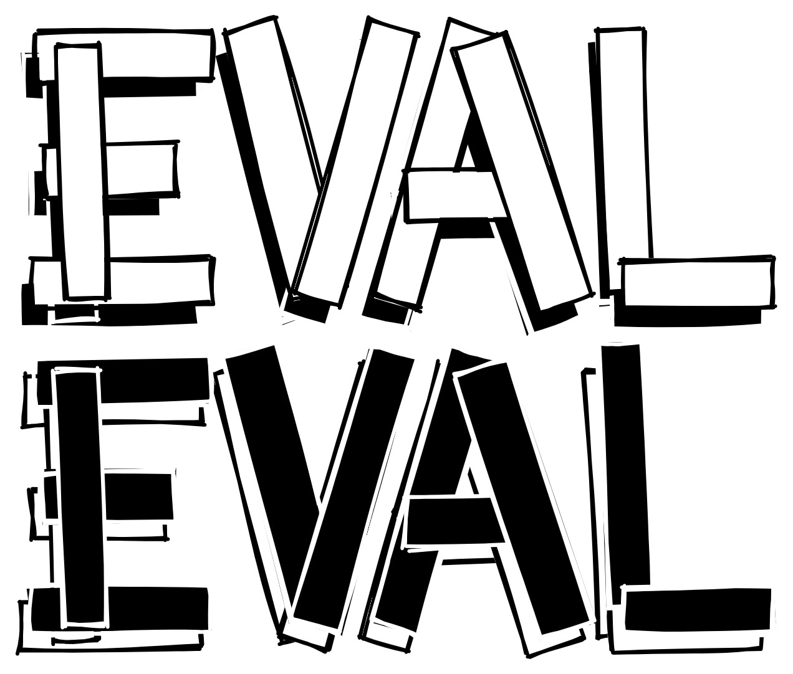

EvalCSU
EvalCSU 是一个关于 CSU 的非官方专业课程经验分享平台，平台所有内容均由贡献者自愿完成
特此鸣谢 EVALUTOR.md 以及所有 EvalCSU 的贡献者们



1 项目简介
1.1 平台背景
EvalCSU 受启发于 CSU 的教学环境中，由于不同环境下所面临的选择往往是不同的，在 EvalCSU 提供有效帮助的同时，希望你能够自行取舍，我们的教学现状描述仅作参考。
本科教育的主体无非两大类：授课老师和学生。在进行现状描述之前，我们希望能和你达成以下共识：
- 通常情况下，授课老师的教学水平不与科研水平成正比
- 通常情况下，学生的成绩优异不与工程能力成正比
- 课程考点不一定代表课程重难点，甚至，不同学校的考点不尽相同
- 同课程名称，编号不同、专业不同，可能导致考点内容不同
- 专业成绩主要由本班授课老师决定
现状描述：
-
授课老师风格
-
激进风格：以提升学生能力为目的，高标准，高要求
- 稳健风格：以遵循课程大纲为目的，中规中矩
老师的授课风格会直接影响学生的学习感受，同时，学院设计的培养方案也会间接影响学生的学习感受，过于紧凑的培养方案带来的压力是极大的，这可能导致你无法很好地完成老师设计的教学任务。
因此，EvalCSU 会通过尽可能公正的评教，给你带来“专业预感受”和“课程预感受”。
-
学生风格
-
刷绩点：国内升学，国外留学，或者盲目跟风
- 做工程：专注竞赛，国外留学，工作导向，或者兴趣使然
- 躺毕业：专业调剂，国外镀金，其他计划，或者家里有矿
学生的学习风格是影响学习成果最重要的因素，学习成果非单一绩点而论，科研成果，竞赛经历，以及工程能力都是衡量学习成果的重要指标。
因此，EvalCSU 会综合不同学生的学习风格，辅助你完成校内课程任务。
EvalCSU 目前以计算机学院和自动化学院为主，欢迎大家积极贡献！
1.2 平台目的
无论你属于哪一类风格的学生，EvalCSU 都会从以下方面协助你学习专业课程：
- 选课排坑：课程评教，老师评教，实验评教
- 课堂笔记：课程 PPT 笔记，考点思维导图
- 实验课设：设计细节，辅助实现，报告撰写
不仅如此，EvalCSU 还积累了许多优质经验：
- 通用技巧：学校级覆盖，转专业疑难点，选课技巧
- 专业规划：学院级覆盖，课程规划，学习方法
- 未来筹备：专业级覆盖，升学筹备，就业方向
EvalCSU 建立的目的是为了帮助你节省时间，更好、更快地掌握专业课程内容，而不是投机取巧，浑浑噩噩度过大学生活。 同时，我们希望能通过 EvalCSU 结识更多优秀的人，并参与到 EvalCSU 的建设中！
Welcome to light up the stars for EvalCSU!
2 项目目录
2.1 通用经验分享
2.2 专业评教及笔记
学院、专业排名不分先后
2.3 专业课程设计
更多内容请参考 EvalCSU-Template
3 贡献
作为本项目的贡献者和维护者，需要时刻牢记和遵守 贡献准则 和 行为准则。
不仅如此，EvalCSU 为了感谢部分贡献者的突出工作，会将这部分贡献者提升为核心贡献者，并分享更加优质、完善的课程设计报告，欢迎你的积极参与！
3.1 贡献准则
- 公开、公平、公正，这是 EvalCSU 的根本价值理念
- 承担开源责任，对内容负责，对他人的贡献负责
- 共创、共建、共享 EvalCSU 专业课程经验分享平台
- 积极响应回馈，在分享中不断学习、不断修正错误
- 严禁窃取他人成果，坚决维护所有平台贡献者的利益
- 贡献工作流程请以 贡献指南 作为导航
3.2 贡献者
感谢以下每个人对 EvalCSU 的贡献！
核心贡献者
 |
 |
 |
 |
 |
 |
 |
 |
 |
 |
 |
所有贡献者
 |
 |
 |
 |
 |
 |
 |
 |
 |
 |
 |
 |
 |
 |
 |
4 项目说明
本项目遵循 CC BY-SA 4.0
EvalCSU 评教部分所涉及的内容仅作为贡献者个人描述，平台及平台维护者不承担任何责任。
4.1 行为准则
作为项目的参与者和使用者，我们希望你能够遵守以下规约：
接受行为：
- 在 Issue 中提出你的疑惑或需求
- 积极参与到 EvalCSU 的贡献中
不接受行为：
- 将 EvalCSU 中的任何文件用于商业用途
- 使用性语言或图像
- 人身攻击、挑衅、侮辱或贬低性评论
- 公开或私下骚扰
- 未经明确许可，发布他人的私人信息，比如地址或电子邮箱
- 其他不道德或不专业的行为